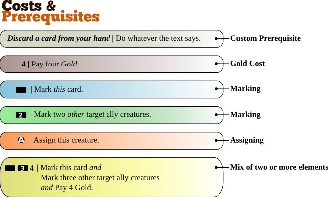

Abilities
Many creatures have special skills and some are able to perform
different kind of actions. There are numerous ways how the creatures can
interact with one and another without engaging in actual physical
combat. These skills are called abilities, regardless of what they do,
and if they have any drawbacks or not.
Abilities are not limited to just creatures – Equipment or Magic could
have them as well, granting a creature additional abilities they
wouldn’t have without them.
There are three main types of abilities : activated, passive and
triggered.
The Golden Rule
When ever a card’s abilities seem to contradict the official game rules, treat
that ability as if it were the official game rule instead.
Passive
A passive ability is one that is always in effect. As soon as the object
with the ability enters play, the ability effect starts, and stops when
the object leaves play.
Example: “All Elvish creatures gets +3 defense” is a passive ability.
Activated
- In contrast to passive abilities, activated abilities requires the
activation by the player.
- To use a card’s ability the player must pay the cost required. The
effect of the ability will not activate before that is done.
- Only the controller of a card may activate it’s abilities. Usually
that means the player that put the card in play by paying for it.
Payment for activation
WTactics uses the above simple system to tell you what the card demands
from you in order to have it’s effect activated. What’s always common
for all types of costs and prerequisites is that we always reveal the
cost first, followed by a colon separator, and lastly the effect is
written. It looks like this:
Cost : Effect
Whatever is on the left side of the colon (:) is the cost or
prerequisites. The text on the right side of the colon is the card’s
effect that will activate once you have met the cost/prerequisites
demands.
There are three main groups of costs and prerequisites that are used to
activate abilities: Gold cost, mark (self or other) and custom.

- The first example (gray) shows us a custom prerequisite. Custom
prerequisites are often text instructions on what you need to do in
order to activate the ability. If you can’t or won’t do exactly as
the text says, then the ability is not activated. Keep in mind that
custom prerequisites can be formulated in any way. They are also more
rarely used in the game compared to the other types of costs &
prerequisites.
- The next example (purple) is straight forward: To activate the
ability you would need to pay exactly 4 Gold. Not more, not less. If
you can’t afford 4 gold, then you can’t activate the ability.
- The third example (blue) introduces marking as something that must
be done first in order to activate the ability. Whenever you see the
empty horizontal rectangle it means that in order to activate the
ability you must be able to mark the card. If the card is already
marked, it can’t be marked again, thus, the requirement needed to use
that ability (you marking the card now when you want to use the
ability) is not met, and as a result you won’t be able to activate
the ability.
- Next example (green) also uses marking as a requirement to activate
the ability. The difference from the previous case is that there is a
number written inside of the rectangle. This means that you have to
mark that many other creatures in play under your control in order
to activate the ability.
- Lastly, we have a complicated example (yellow): It shows us that a
card can mix any two or more types of costs and prerequisites with
each other. Although there is no limitation to how they can be mixed,
mixes are seldom as complicated as in this example.
Triggered
- A triggered ability is activated if and only if it’s trigger takes
place.
- Triggered abilities are not optional and must always be applied if
possible.
- If a triggered ability’s effect can’t be applied then nothing
happens.
- Example: Discard a non-Black Legion creature every time a skeleton
comes into play.
- If my opponent played that curse on you, and your opponent puts a
skeleton into play, then you must discard a non-Black creature.
If you have only black creatures however, then it is not possible
for you to discard a creature, in which case you don’t have to do
anything.